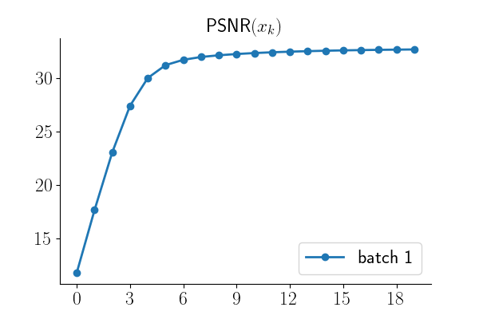

Note
New to DeepInverse? Get started with the basics with the 5 minute quickstart tutorial..
Distributed Plug-and-Play (PnP) Reconstruction#
Many large-scale imaging problems involve operators that can be naturally decomposed as a stack of multiple sub-operators:
where each sub-operator \(A_i\) is computationally expensive. Examples include multi-coil MRI, radio interferometry, or multi-sensor imaging systems. Additionally, the images being reconstructed can be very large, making it challenging to fit the entire reconstruction process into a single device’s memory.
The distributed framework enables you to parallelize both the physics computations (distributing operators across devices) and the denoising step (using image tiling for large images). This allows you to solve large-scale inverse problems that would otherwise be difficult to solve on a single device.
This example demonstrates how to implement a distributed Plug-and-Play (PnP) reconstruction algorithm
where both the stacked physics operators and the denoiser are distributed across multiple processes using
deepinv.distributed.distribute().
Usage:
# Single process
python examples/distributed/demo_pnp_distributed.py
# Multi-process with torchrun (2 processes)
python -m torch.distributed.run --nproc_per_node=2 examples/distributed/demo_pnp_distributed.py
Key Features:
Distribute multiple physics operators across processes/devices
Distribute denoiser with image tiling
PnP algorithm with distributed components
\(\ell_2\) data fidelity gradient computed using
deepinv.distributed.DistributedDataFidelity.grad()
Key Steps:
Create stacked physics operators and measurements with reproducible noise
Initialize distributed context
Distribute physics with
deepinv.distributed.distribute()Distribute denoiser with tiling configuration
Create PnP prior and \(\ell_2\) data fidelity
Run PnP iterations using
deepinv.distributed.DistributedDataFidelity.grad()for gradient computationVisualize results and track convergence
Import modules and define noisy image generation#
We start by importing torch and the modules of deepinv that we use in this example. We also define a function that generates noisy images to evaluate the distributed framework.
import torch
from deepinv.physics import GaussianNoise, stack
from deepinv.physics.blur import Blur, gaussian_blur
from deepinv.utils.demo import load_example
from deepinv.optim.data_fidelity import L2
from deepinv.optim.prior import PnP
from deepinv.loss.metric import PSNR
from deepinv.utils.plotting import plot, plot_curves
from deepinv.models import DRUNet
# Import the distributed framework
from deepinv.distributed import DistributedContext, distribute
def create_physics_and_measurements(device, img_size=1024, seed=42):
"""
Create stacked physics operators and measurements using example images.
:param device: Device to create operators on
:param tuple img_size: Size of the image (H, W)
:param int seed: Random seed for reproducible noise generation
:returns: Tuple of (stacked_physics, measurements, clean_image)
"""
# Load example image in original size
clean_image = load_example(
"CBSD_0010.png",
grayscale=False,
device=device,
img_size=img_size,
resize_mode="resize",
)
# Create different Gaussian blur kernels
kernels = [
gaussian_blur(sigma=1.0, device=str(device)), # Small blur
gaussian_blur(sigma=2.0, device=str(device)), # Medium blur
gaussian_blur(
sigma=(1.5, 3.0), angle=30, device=str(device)
), # Anisotropic blur
]
# Noise levels for each operator
noise_levels = [0.03, 0.05, 0.04]
# Create physics operators
physics_list = []
for i, (kernel, noise_level) in enumerate(zip(kernels, noise_levels)):
# Create blur operator with circular padding and noise model
rng = torch.Generator(device=device).manual_seed(seed + i)
physics = Blur(
filter=kernel,
padding="circular",
device=str(device),
noise_model=GaussianNoise(sigma=noise_level, rng=rng),
)
physics_list.append(physics)
# Stack physics operators into a single operator
stacked_physics = stack(*physics_list)
# Generate measurements (returns a TensorList)
measurements = stacked_physics(clean_image)
return stacked_physics, measurements, clean_image
Configuration of parallel pnp#
num_iterations = 20
step_size = 0.5
denoiser_sigma = 0.05
img_size = 512
patch_size = 256
overlap = 64
Define distributed context and run algorithm#
# Initialize distributed context (handles single and multi-process automatically)
with DistributedContext(seed=42) as ctx:
if ctx.rank == 0:
print("=" * 70)
print("Distributed PnP Reconstruction")
print("=" * 70)
print(f"\nRunning on {ctx.world_size} process(es)")
print(f" Device: {ctx.device}")
# ---------------------------------------------------------------------------
# Step 1: Create stacked physics operators and measurements
# ---------------------------------------------------------------------------
stacked_physics, measurements, clean_image = create_physics_and_measurements(
ctx.device, img_size=img_size
)
if ctx.rank == 0:
print(f"\nCreated stacked physics with {len(stacked_physics)} operators")
print(f" Image shape: {clean_image.shape}")
print(f" Measurements type: {type(measurements).__name__}")
# ---------------------------------------------------------------------------
# Step 2: Distribute physics operators
# ---------------------------------------------------------------------------
if ctx.rank == 0:
print(f"\n🔧 Distributing physics operators...")
distributed_physics = distribute(stacked_physics, ctx)
if ctx.rank == 0:
print(f" Distributed physics created")
print(
f" Local operators on this rank: {len(distributed_physics.local_indexes)}"
)
# ---------------------------------------------------------------------------
# Step 3: Create L2 data fidelity
# ---------------------------------------------------------------------------
data_fidelity = L2()
distributed_data_fidelity = distribute(
data_fidelity, ctx
) # Distribute L2 data fidelity, optional.
if ctx.rank == 0:
print(f"\nCreated L2 data fidelity")
# ---------------------------------------------------------------------------
# Step 4: Distribute denoiser with tiling
# ---------------------------------------------------------------------------
if ctx.rank == 0:
print(f"\n Loading and distributing denoiser...")
print(f" Patch size: {patch_size}x{patch_size}")
print(f" Receptive field radius: {overlap}")
denoiser = DRUNet(pretrained="download").to(ctx.device)
distributed_denoiser = distribute(
denoiser,
ctx,
patch_size=patch_size,
overlap=overlap,
)
if ctx.rank == 0:
print(f" Distributed denoiser created")
# ---------------------------------------------------------------------------
# Step 5: Create PnP prior with distributed denoiser
# ---------------------------------------------------------------------------
prior = PnP(denoiser=distributed_denoiser)
if ctx.rank == 0:
print(f"\nCreated PnP prior with distributed denoiser")
# ---------------------------------------------------------------------------
# Step 6: Run distributed PnP algorithm
# ---------------------------------------------------------------------------
if ctx.rank == 0:
print(f"\nRunning PnP reconstruction ({num_iterations} iterations)...")
# Initialize reconstruction with zeros
x = torch.zeros_like(clean_image)
# Track PSNR (only on rank 0)
psnr_metric = PSNR()
psnr_history = []
# PnP iterations
with torch.no_grad():
for it in range(num_iterations):
# Data fidelity gradient step using the data_fidelity.grad() method
grad = distributed_data_fidelity.grad(x, measurements, distributed_physics)
# Gradient descent step
x = x - step_size * grad
# Denoising step (proximal operator of prior)
x = prior.prox(x, sigma_denoiser=denoiser_sigma)
# Compute PSNR on rank 0
if ctx.rank == 0:
psnr_val = psnr_metric(x, clean_image).item()
psnr_history.append(psnr_val)
if it == 0 or (it + 1) % 5 == 0:
print(
f" Iteration {it+1}/{num_iterations}, PSNR: {psnr_val:.2f} dB"
)
# ---------------------------------------------------------------------------
# Step 7: Compare with non-distributed PnP (only on rank 0)
# ---------------------------------------------------------------------------
if ctx.rank == 0:
print(f"\nComparing with non-distributed PnP reconstruction...")
# Run non-distributed PnP
x_ref = torch.zeros_like(clean_image)
with torch.no_grad():
for it in range(num_iterations):
# Data fidelity gradient step using data_fidelity.grad()
grad_ref = data_fidelity.grad(x_ref, measurements, stacked_physics)
x_ref = x_ref - step_size * grad_ref
# Denoising step
x_ref = denoiser(x_ref, sigma=denoiser_sigma)
# Compare results
diff = torch.abs(x - x_ref)
mean_diff = diff.mean().item()
max_diff = diff.max().item()
psnr_ref = psnr_metric(x_ref, clean_image).item()
psnr_dist = psnr_metric(x, clean_image).item()
print(f" Non-distributed final PSNR: {psnr_ref:.2f} dB")
print(f" Distributed final PSNR: {psnr_dist:.2f} dB")
print(f" PSNR difference: {abs(psnr_dist - psnr_ref):.2f} dB")
print(f" Mean absolute difference: {mean_diff:.2e}")
print(f" Max absolute difference: {max_diff:.2e}")
# Check that results are close
assert (
abs(psnr_dist - psnr_ref) < 1.0
), f"PSNR difference too large: {abs(psnr_dist - psnr_ref):.2f} dB"
print(f" Results match well!")
# ---------------------------------------------------------------------------
# Step 8: Visualize results (only on rank 0)
# ---------------------------------------------------------------------------
if ctx.rank == 0:
print(f"\nReconstruction completed!")
print(f" Final PSNR: {psnr_history[-1]:.2f} dB")
# Plot results
plot(
[clean_image, measurements[0], x],
titles=["Ground Truth", "Measurement (first)", "Reconstruction"],
save_fn="distributed_pnp_result.png",
figsize=(12, 4),
)
# Plot convergence curve
plot_curves({"psnr": [psnr_history]}, save_dir=".")
- 
======================================================================
Distributed PnP Reconstruction
======================================================================
Running on 1 process(es)
Device: cuda:0
Created stacked physics with 3 operators
Image shape: torch.Size([1, 3, 767, 512])
Measurements type: TensorList
🔧 Distributing physics operators...
Distributed physics created
Local operators on this rank: 3
Created L2 data fidelity
Loading and distributing denoiser...
Patch size: 256x256
Receptive field radius: 64
Distributed denoiser created
Created PnP prior with distributed denoiser
Running PnP reconstruction (20 iterations)...
/local/jtachell/deepinv/deepinv/deepinv/distributed/strategies.py:476: UserWarning: No tiling_dims provided. Assuming last 2 dimensions: (-2, -1). If your layout is different, please provide tiling_dims explicitly.
warnings.warn(
Iteration 1/20, PSNR: 11.79 dB
Iteration 5/20, PSNR: 30.02 dB
Iteration 10/20, PSNR: 32.26 dB
Iteration 15/20, PSNR: 32.58 dB
Iteration 20/20, PSNR: 32.71 dB
Comparing with non-distributed PnP reconstruction...
Non-distributed final PSNR: 32.67 dB
Distributed final PSNR: 32.71 dB
PSNR difference: 0.03 dB
Mean absolute difference: 9.88e-04
Max absolute difference: 1.61e-01
Results match well!
Reconstruction completed!
Final PSNR: 32.71 dB
Total running time of the script: (0 minutes 16.521 seconds)